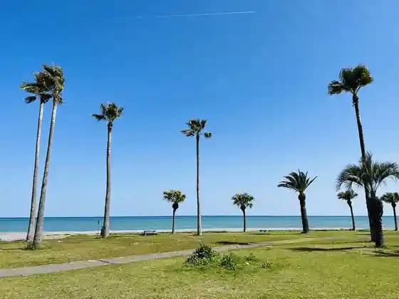
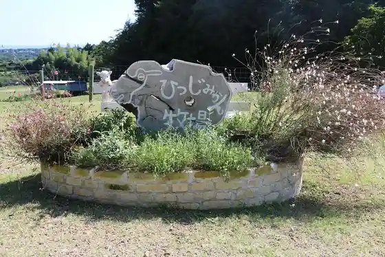
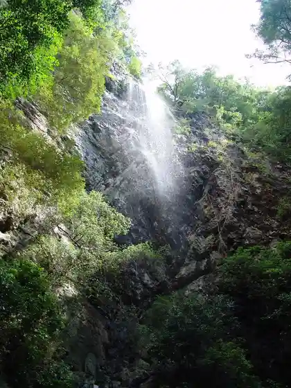

Shichiri Mihamacho Fureai Beach
Mihamacho, Mie · Official / source link

Roadside Station (Park Shichiri Mihamacho)
Mihamacho, Mie · 05979-2-3600 · Official / source link
A Tawa Shrine
Mihamacho, Mie · 05979-2-4071 · Official / source link
Hitsujimikan Ranch
Mihamacho, Mie · 080-4835-3769 · Official / source link

Fudo Falls
Mihamacho, Mie · 05979-3-0517 · Official / source link

Genchi Shrine
Mihamacho, Mie · Official / source link
Mihamacho Teratani General Park
Mihamacho, Mie · 05979-3-0526 · Official / source link
Yoko Kaki Toge (Kumano Kodo Ise Michi)
Mihamacho, Mie · 0597-89-6172 · Official / source link
Kaze Den Toge (Kumano Kodo Ise Michi)
Mihamacho, Mie · 0597-89-6172 · Official / source link
Momotaro Iwa
Mihamacho, Mie · 05979-3-0517 · Official / source link
Mihamacho Chuo Kominkan
Mihamacho, Mie · 05979-2-3151 · Official / source link
Hiki Saku no Dai Kusu
Mihamacho, Mie · 05979-3-0517 · Official / source link
Ichiki no Ibuki
Mihamacho, Mie · 05979-3-0517 · Official / source link
Kamiki no Inumaki
Mihamacho, Mie · 05979-3-0517 · Official / source link